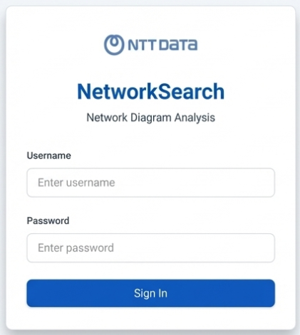
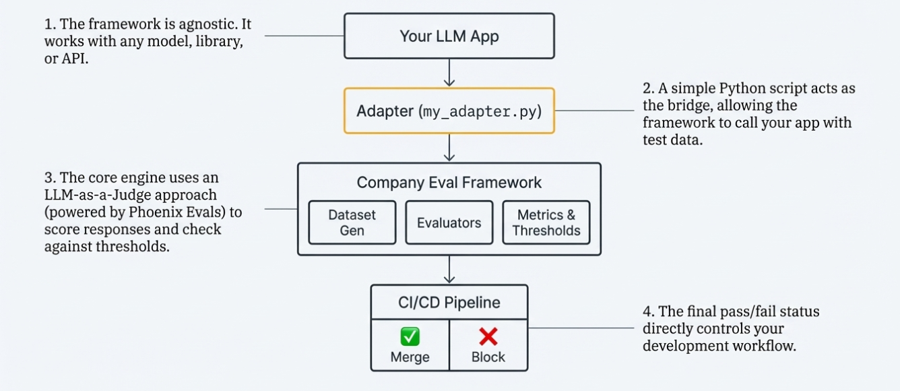

Moving Beyond “Vibes” for LLM Quality
Introducing a standardized framework to ship AI features with data‑driven confidence — with CI/CD-style quality gates, clear pass/fail signals, and interpretable failure analysis.
It started with a high-stakes challenge
In our work with the State of Oregon, we saw what happens when critical knowledge is locked in complex artifacts (like hundreds of Visio network diagrams): search is slow, interpretation is risky, and changes can trigger outages.
- 400+ complex Visio network diagrams created siloed knowledge and slowed searches.
- Reasoning about dependencies during change windows increased operational risk.
- Tracing dependencies was difficult and time-consuming.
- Audits and handoffs took far too long — delaying work and increasing exposure.
From diagrams to searchable knowledge
We built NetworkSearch to query, interpret, and generate answers from network diagrams — and immediately hit the next question: how do you ship a complex AI system like this and know it’s actually good?
Query
Find the right diagram using natural language for devices, subnets, VLANs, and technologies.
Interpret
Understand shapes, connections, and architecture using vision-based analysis.
Generate
Create one-click summaries and security reports — turning hours of work into seconds.
- Did my prompt change break something?
- Is this new model actually better?
- How do I systematically test my RAG pipeline?
- Are we just evaluating based on “vibes”?

A new standard for LLM development
Replace manual, ad-hoc testing with quantified evaluation and automated quality gates — so regressions are caught before users feel them.
- “I think the new prompt is better.”
- Manual, ad-hoc testing before release.
- Each team invents their own evaluation scripts.
- Find regressions after users complain.
- Ship and hope.
- Quantified, objective quality scores.
- CI/CD catches regressions on every commit.
- A standardized, shared tool across the company.
- Catch quality issues before they reach production.
- Automated quality gates.
How it works
Your app stays yours. The framework provides a thin adapter interface and a repeatable pipeline: dataset → evaluators → thresholds → CI pass/fail.
- Framework agnostic. Works with any model, library, or API.
- Adapter bridge. A simple Python function lets the framework call your app with test data.
- LLM-as-judge evaluations. Scores responses against your metrics using Phoenix Evals.
- CI/CD control. The final pass/fail status can block merges automatically.

Go from zero to automated quality gates in 3 commands
Install once, then wire the framework into your CI to give every LLM change a safety net.
> company-eval init my_project
> company-eval generate-dataset --app-type rag --output data/tests.jsonl
> company-eval ci-run --config eval_config.yaml
Fine-grained control through a simple config file
Describe your app, dataset, eval suite, and thresholds in one YAML file — no custom infra required.
# eval_config.yaml
app_name: my_chatbot
app_type: simple_chat
adapter:
module: "my_evals.my_adapter"
function: "run_batch"
dataset:
mode: "static"
path: "my_evals/data/eval_dataset.jsonl"
eval_suite: "basic_chat"
thresholds:
user_frustration:
max_mean: 0.3
helpfulness_quality:
min_mean: 0.7- Tell the framework what kind of app you have.
- Point to the Python function that runs your app.
- Specify your test data: static regression set or synthetic cases.
- Choose a pre-built eval suite (e.g.,
basic_rag) or define your own. - Define acceptance criteria — CI fails if these thresholds aren’t met.
Natively integrated with your GitHub workflow
Add a single workflow file and turn every PR into a quality gate for your LLM stack.
A GitHub Actions workflow is included when you run company-eval init. PRs are automatically blocked if quality drops below your thresholds.
# .github/workflows/eval.yml
- name: Run LLM Evaluation
run: company-eval ci-run --config eval_config.yaml| Trigger | Mode | Use case |
|---|---|---|
| Push / PR | Static | Fast regression testing |
| Manual | Synthetic | Broader coverage with fresh cases |
| Manual | Both | Full validation before a release |
What’s next: the roadmap
We’re committed to making this the central tool for AI quality at the company.
- Dashboard for tracking quality trends over time.
-
Production traffic sampling (
company-eval sample-prod). - Custom evaluator templates.
- Slack / Teams notifications on failures.
- Cost tracking per evaluation run.
Built for teams, not just individuals
Have an idea or a need? Reach out to the AI Platform team or submit a PR. This is an internal tool built for all of us.
Ship with confidence, starting today
Initialize a new eval project, connect your app adapter, and turn on CI gates — all in a single afternoon.